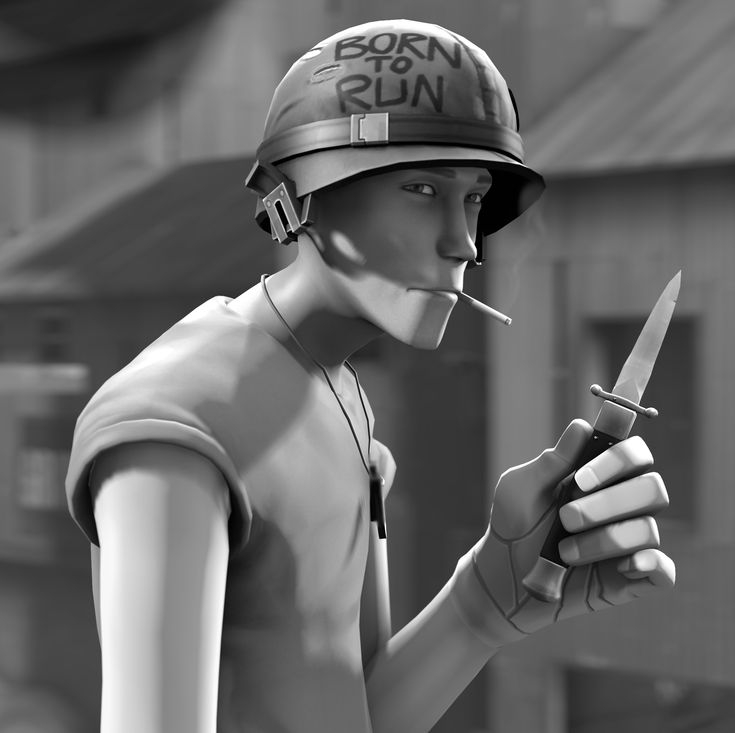

Origen: Boston, Massachusetts, EE. UU.
Salud: 125 HP
Velocidad: 133%
Nacido en Boston (Massachusetts), el Scout es un veloz corredor y beisbolista, que tiene dos cosas importantes, un bate de beisbol y una actitud cínica de «chúpate esa». Es el mercenario más rápido y habilidoso del campo de batalla sin ayuda. Su salto doble deja a los oponentes más lentos, como el Heavy, a la altura de sus pies, mostrando una superioridad para desplazarse por el terreno, evitando balas y proyectiles. Equipado con una Recortada, una Pistola y un Bate, el Scout es una clase ideal para el combate agresivo y el flanqueo. Además es ideal para llevar a cabo tácticas de «golpear y correr» de forma rápida y encadenada, con el objetivo de debilitar a los enemigos para que este los mate o sus compañeros los rematen, gracias a la gran capacidad de entrar, infligir daño y huir antes de que noten su presencia. Sin embargo, el Scout, al igual que el Engineer, el Sniper y el Spy, tiene la salud base más baja del juego, siendo muy vulnerable en el campo de batalla; algo justo, a cambio de su gran velocidad, que le dota de gran habilidad para entrar y salir de zonas rápidamente, causando gran cantidad de daño si la puntería le acompaña.
